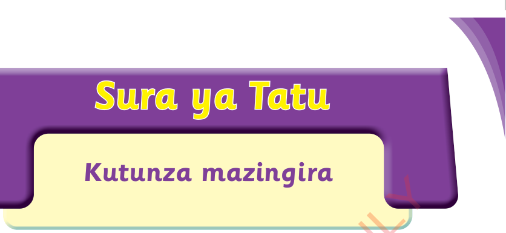
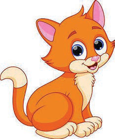

Sura ya Tatu
Kutunza mazingira
Ninavifahamu vifaa vya kutunzia mazingira

Ninatumia vifaa mbalimbali kutunza mazingira yangu.
Shughuli ya kwanza
Tumia vifaa vya TEHAMA kuangalia video au picha zinazoonesha vifaa mbalimbali vya kutunzia mazingira. Bainisha vifaa vya kutunzia mazingira ulivyoviona.
Sikiliza maelezo ya picha zifuatazo au zitazame, kisha jibu maswali.